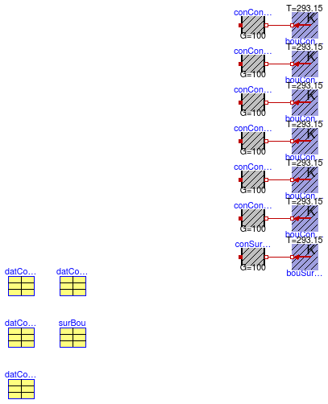

This package contains base classes that are used to construct the models in Buildings.Rooms.BaseClasses.Examples.
Extends from Modelica.Icons.BasesPackage (Icon for packages containing base classes).
| Name | Description |
|---|---|
| PartialInfraredRadiation | Partial model to test infrared radiation inside the room |

| Type | Name | Default | Description |
|---|---|---|---|
| Exterior constructions | |||
| Integer | nConExt | 1 | Number of exterior constructions |
| Integer | nConExtWin | 1 | Number of window constructions |
| Partition constructions | |||
| Integer | nConPar | 1 | Number of partition constructions |
| Boundary constructions | |||
| Integer | nConBou | 1 | Number of constructions that have their outside surface exposed to the boundary of this room |
| Integer | nSurBou | 1 | Number of surface heat transfer models that connect to constructions that are modeled outside of this room |
model PartialInfraredRadiation "Partial model to test infrared radiation inside the room" extends Buildings.Rooms.BaseClasses.ConstructionRecords( nConExt=1, nConExtWin=1, nConPar=1, nConBou=1, nSurBou=1, datConExt(each A=1), datConBou(each A=1), datConExtWin(each A=1, each hWin=1, each wWin=0.5), surBou(each A=1), datConPar(each A=1));protected Buildings.HeatTransfer.Sources.FixedTemperature bouConExt[NConExt](each T=293.15) "Boundary condition"; Modelica.Thermal.HeatTransfer.Components.ThermalConductor conConExt[NConExt](each G= 100) "Heat conductor"; Modelica.Thermal.HeatTransfer.Components.ThermalConductor conConExtWin[ NConExtWin](each G=100) "Heat conductor"; Modelica.Thermal.HeatTransfer.Components.ThermalConductor conConExtWinFra[ NConExtWin](each G=100) "Heat conductor"; Modelica.Thermal.HeatTransfer.Components.ThermalConductor conConPar_a[NConPar](each G= 100) "Heat conductor"; Modelica.Thermal.HeatTransfer.Components.ThermalConductor conConPar_b[NConPar](each G= 100) "Heat conductor"; Modelica.Thermal.HeatTransfer.Components.ThermalConductor conConBou[NConBou](each G= 100) "Heat conductor"; Modelica.Thermal.HeatTransfer.Components.ThermalConductor conSurBou[NSurBou](each G= 100) "Heat conductor"; protected Buildings.HeatTransfer.Sources.FixedTemperature bouConExtWin[ NConExtWin](each T=293.15) "Boundary condition"; Buildings.HeatTransfer.Sources.FixedTemperature bouConExtWinFra[ NConExtWin](each T=293.15) "Boundary condition"; Buildings.HeatTransfer.Sources.FixedTemperature bouConPar_a[NConPar](each T= 293.15) "Boundary condition"; Buildings.HeatTransfer.Sources.FixedTemperature bouConPar_b[NConPar](each T= 293.15) "Boundary condition"; Buildings.HeatTransfer.Sources.FixedTemperature bouConBou[NConBou](each T=293.15) "Boundary condition"; Buildings.HeatTransfer.Sources.FixedTemperature bouSurBou[NSurBou](each T=293.15) "Boundary condition"; equationconnect(bouConExt.port, conConExt.port_b); connect(bouConExtWin.port, conConExtWin.port_b); connect(bouConExtWinFra.port, conConExtWinFra.port_b); connect(bouConPar_a.port, conConPar_a.port_b); connect(bouConPar_b.port, conConPar_b.port_b); connect(bouConBou.port, conConBou.port_b); connect(bouSurBou.port, conSurBou.port_b); end PartialInfraredRadiation;